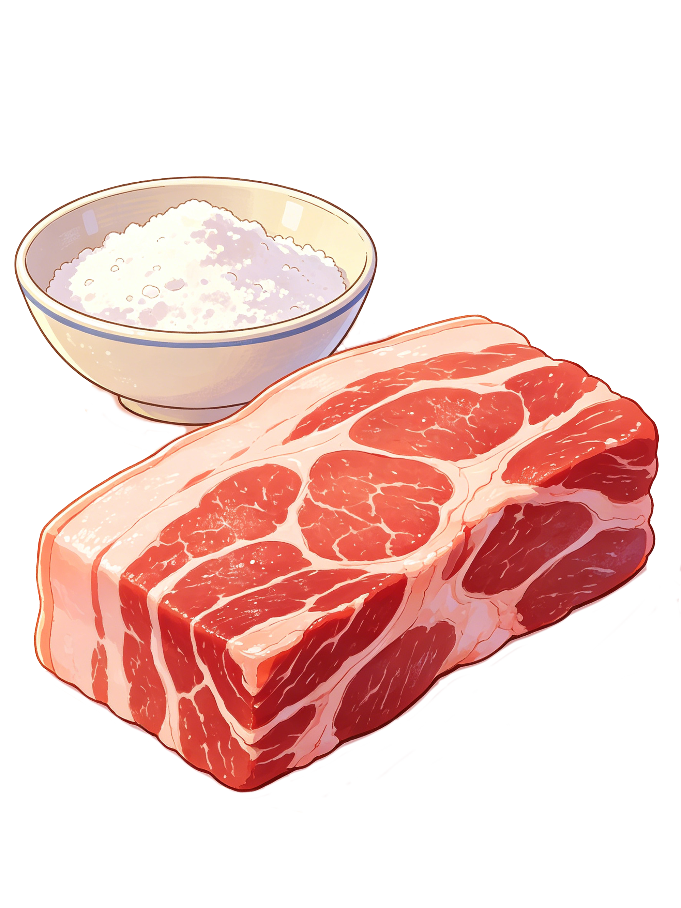
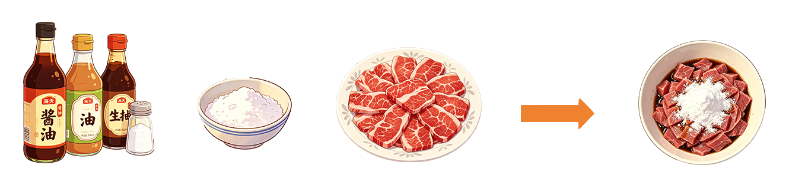
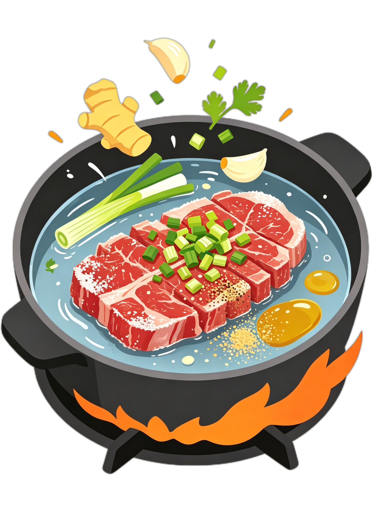
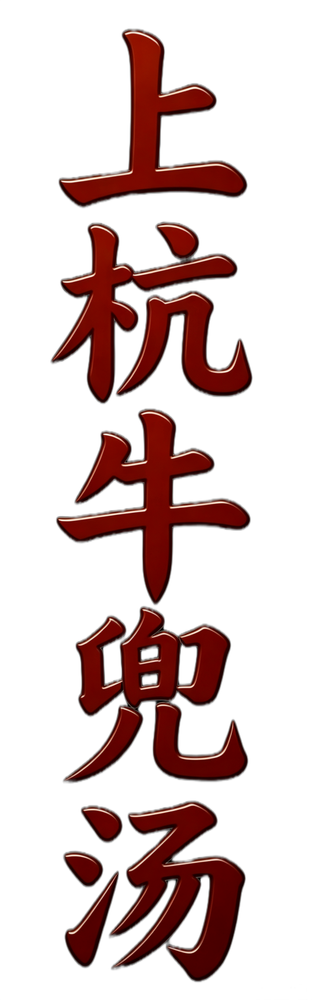

① 食材选择
选用黄牛前胸肉或大腿肉等带筋络部位的牛肉，以及蕉芋粉或木薯粉

② 腌制过程
牛肉切薄片。加入生抽、盐抓匀，加入足量粉，用力揉搓至粉粒消失。

③ 烹饪过程
锅中加冷水、姜葱蒜烧开，将抓好粉的牛肉撕开放入，汆烫变色即关火，利用余温熟化。起锅前加芹菜末、白胡椒粉、香油调味。



上杭牛兜汤起源于客家地区街头巷尾的市井饮食，其名源自客家话“端汤”的读音，既形象地描绘了食客端着碗站立或行走着吃的场景，也指制作时用地瓜粉“勾芡”的动作。当地还流传着乾隆皇帝下江南时偶遇小贩、因“赶烧吃”的催促而得名的传说。历史上，上杭因水运发达、商客云集，兜汤小贩挑着炭火担子走街串巷，逐渐成为当地的标志性风味。